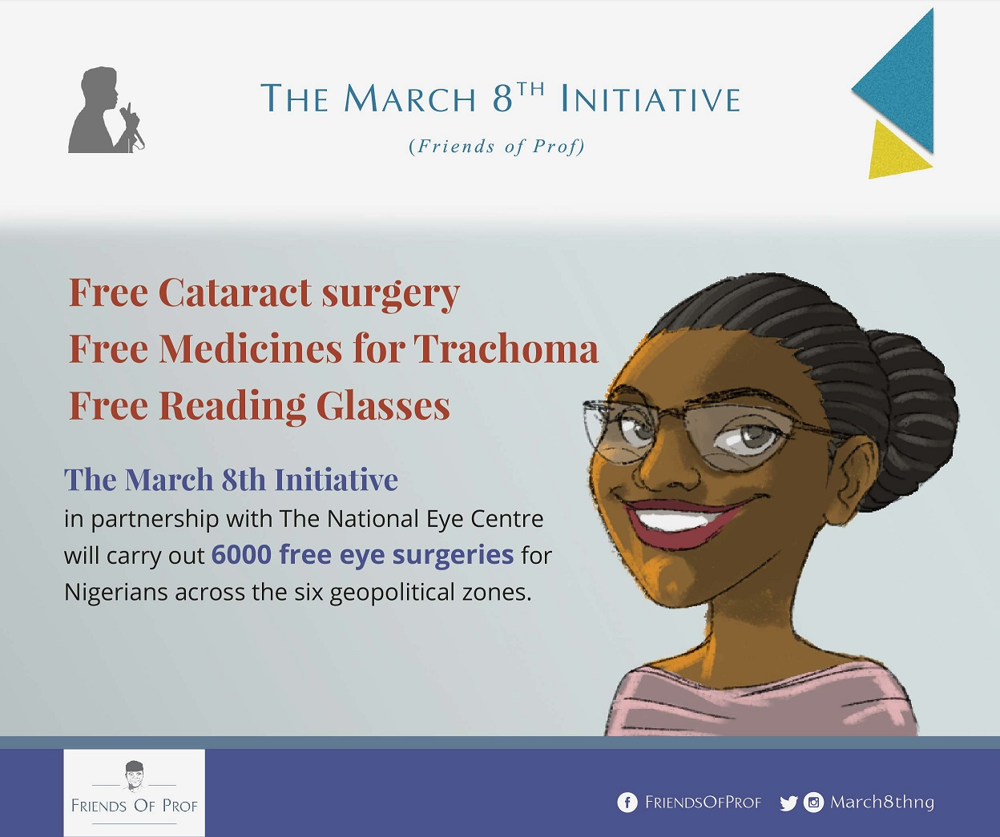
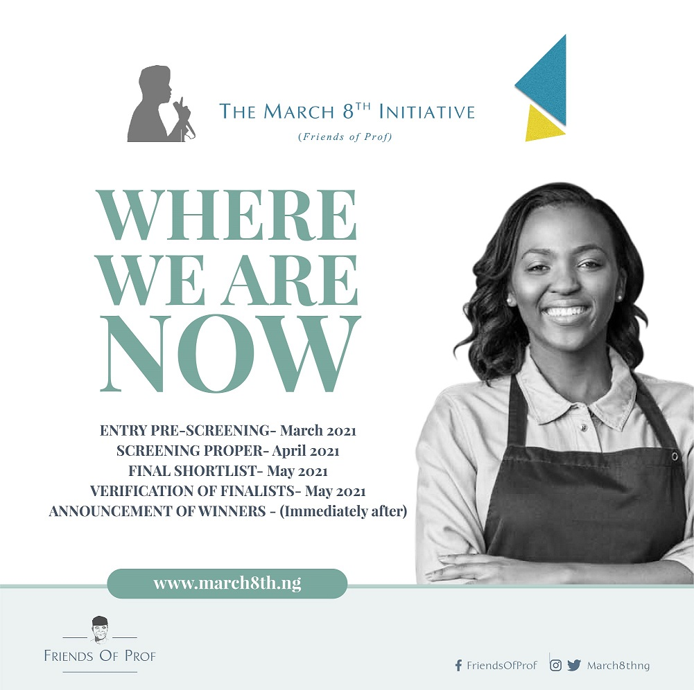

THE MARCH 8TH INITIATIVE
Friends of Prof.

ANNOUNCEMENT - OPHTHALMOLOGICAL INTERVENTION
Do you need or know somebody who needs eye treatment or surgery?
Worry no more as succour has come!
The March 8th Initiative, a brainchild of the “Friends of Prof” is organised to inspire and promote communal, entrepreneurial and public-spirited endeavours within Nigeria in honour of the birthday of His Excellency, Prof. Yemi Osinbajo, SAN, GCON.
Working with the National Eye Centre, the March 8th Initiative is carrying out Eye Treatments, Corrective Eye Surgeries and other interventions across the six geopolitical zones to provide succour and other therapeutic care for those with suffering with cataract and other eye defects.

This Intervention kicks off with the Southwest and North west geopolitical zones on the 24th and 27th of May 2021 respectively.
For the South West, it will take place at 8am daily as follows:
- General Hospital, Ikenne - Monday 24th to Wednesday 26th May 2021.
- General Hospital, Idiroko - Monday 31st May to Wednesday 2nd June 2021.
- General Hospital, Owode Egba - Monday 7th June to Wednesday 9th June 2021.
For the North west geopolitical zone, it starts at 8am daily as follows:
- Specialist Hospital Sokoto - Thursday 27th May, 2021 to Sunday 29th May, 2021; and Thursday 3rd June to Sunday 6th June, 2021.
- General Hospital, Illela - Thursday 10th June to Sunday 13th June, 2021.
- General Hospital Dogon Daji - Thursday 17th June to Sunday 20th June 2021.
THE MARCH 8TH INITIATIVE MSME BUSINESS AND HEALTH REWARD GRANT; SHORTLIST AND SCREENING PROCESS
As a developing nation, entrepreneurship remains a vital catalyst needed for economic growth and overall development. Creating jobs in a thin job market and fostering innovation despite constraints encountered daily, the indomitable spirit of Nigeria’s burgeoning MSME sector continues to inspire us all.
With this in mind, the March 8th Initiative was launched in 2020 in honor of Nigeria’s Vice President Prof. Yemi Osinbajo, SAN, GCON, in a bid to support and further fuel the entrepreneurship industry in the country. Created by well-meaning Nigerians who share in the Vice President’s passion for MSMEs in commemoration of his birthday, the grant offers one-off business grants to young Nigerians seeking opportunities to start or expand on their innovative business ideas.
For its second edition, the initiative was reorganized into 4 categories this year to provide more opportunities for young Nigerian entrepreneurs between 18 and 35 years.

The call for application was made on March 8th, 2021 with entrants being called on through public advertisements to submit applications for grants ranging from N100, 000 to N1, 000,000, and covering varying stages of small business growth. To qualify, applicants who own and run Nigerian businesses were mandated to submit a one-page proposal that would in explicit detail, explain how they intend to use the prize money to expand their current businesses.
Adjusting to mercurial times, this year’s March 8th Initiative also recognized health workers nationwide who, in the face of a global pandemic, demonstrated exemplary courage, compassion, diligence, hard work, and professionalism in carrying out their duties. For this, Nigerians were required to nominate health workers who have shown these qualities for a reward of N1 Million under a Health Grant Reward Category which seeks to acknowledge their invaluable service.
An ophthalmological intervention is also slated to hold later this year under the auspices of the March 8th initiative with further details to be announced soon.
Over 35,000 applications were received as of 11:59 pm on Sunday, the 14th of March, 2021, which had previously been announced as the submission deadline. All applications were compiled according to their pre-arranged categories.
The shortlisting process has begun with the following screening stages:
- A comprehensive entry pre-screening process (March 2021),
- Screening proper- (April 2021)
- A final shortlist (May 2021),
- Verification of shortlisted finalists (May 2021).
The date of the final announcement of the winners will be announced soon.
To ensure a high level of transparency and integrity, the shortlist process is being carried out by independent evaluators consisting of highly reputable Nigerians at home and in the diaspora, who will evaluate each proposal on substance, awarding marks on a range of criteria including but not limited to clarity, cogency, innovation, and sustainability.
This year, the March 8th Initiative will make available grants to 448 individuals and businesses in Nigeria. “Friends of Prof” will continue to make it a priority to help small businesses grow and expand in smart and efficient ways. The March 8th Initiative is just one unique way of equipping small business owners with the right resources to best drive their business forward.
For more information on future grants and opportunities, visit our official site: www.march8th.ng or follow us across our social media channels with @friendsofprof.